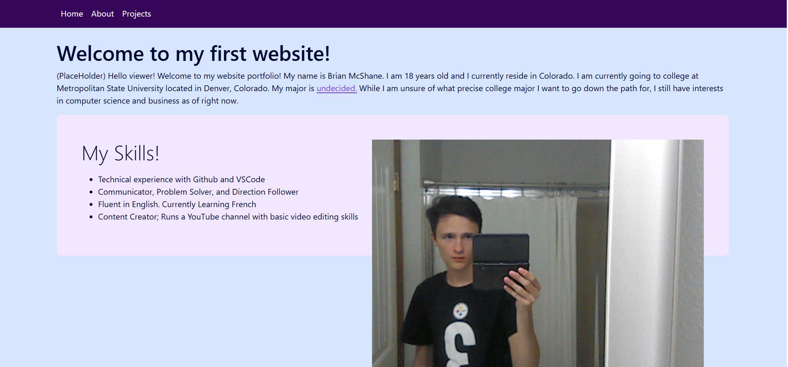

Projects Page
This page contains 3 projects that I either did or I'm currently doing.
Mentor Interview: This semester, I am taking a business class and one of the long term projects is to interview a mentor for the purpose of getting more information on a potential major. Although I am undecided, I chose to interview a mentor for business as that's an interest I have. The interview itself was really good and I got a new outlook on going down the business path, including the specific paths in business like marketing, accounting, financing, etc. The project also requires a written paper and presentation, which is something I am still working on.

Making This Website: Believe it or not, this is the first website I've ever made from scratch. I've made previous websites using Google Sites, but that doesn't count considering it does not involve creating HTML code. This website that I made involved learning how HTML and CSS code works in computer science class. Overall, creating this website wasn't too hard. Heck, I even made this project page seperate from the about page, which was not a requirement. I hope to learn further about how to make more pretty websites. This website is fine but it lacks personality.
Fixing a Desktop Computer: In 10th grade, our grade was asked to do a Personal Project, which means that the class does a project about anything they're passionate about as opposed to a specific assigned project. For that project, I decided to buy a broken desktop computer and fix it, as well as upgrade it. I ended up buying a Dell Optiplex 780 that allegedly had a power supply issue. Once I got the computer, I tinkered with it and I eventually got the power supply to work either out of sheer luck or the computer wasn't broken in the first place. So the fixing the computer bit didn't exactly go to plan. But I still upgraded it by adding RAM, an SSD, and a discrete graphics card. This project probably took about a few weeks as disassembly wasn't that hard and creating the needed PowerPoint slideshow reflection was easy.